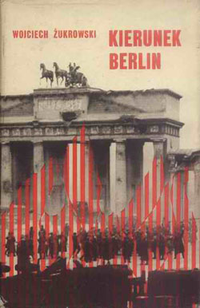

← Wszystkie książki

BIBLIOTEKA WOJCIECHA ŻUKROWSKIEGO
Kierunek Berlin
Zbiór nowel filmowych.
- Autor
- Wojciech Żukrowski
- Rodzaj
- Nowele filmowe
- Rok w bibliografii
- 1970
Bibliografia i źródła opisu
ŚLADY KOLEJNYCH WYDAŃ
Okładki z archiwum
Zachowane okładki mogą pochodzić z różnych wydań książki.